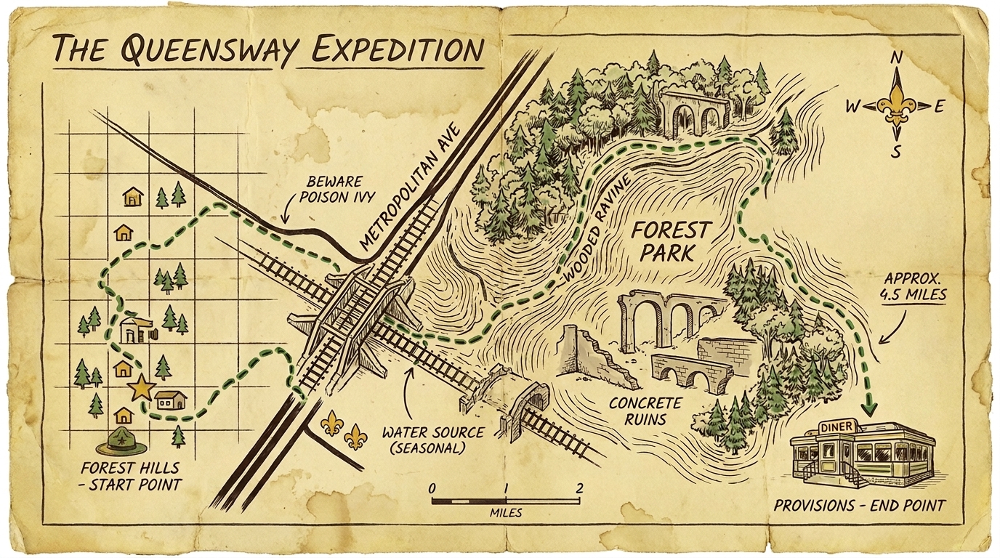

Assemble at the Forest Hills-71st Av Station. We march south to Fleet Street to observe the forgotten iron right-of-way slicing cleanly through residential blocks.
Following the road until it meets Metropolitan Avenue. We will cross strictly underneath the massive, rusted railway overpass bridging the canyon of the street grid.
Entering the woods via the Orange Trail loop. This is the deep canopy hike directly parallel to the elevated concrete ruins completely reclaimed by oak forest flora.
Exiting at Myrtle Avenue to secure a booth at the vintage diner counter for immediate group nourishment (grilled cheese, disco fries, and milkshakes).
Post-nourishment, scouts can depart via the nearby M train at the Metropolitan Av-Middle Village station or the J/Z lines at 121st St. The expedition is officially adjourned.
Bring water and sunscreen. Pack binoculars if available. Troop departs promptly at 11am. Friends of friends welcome.